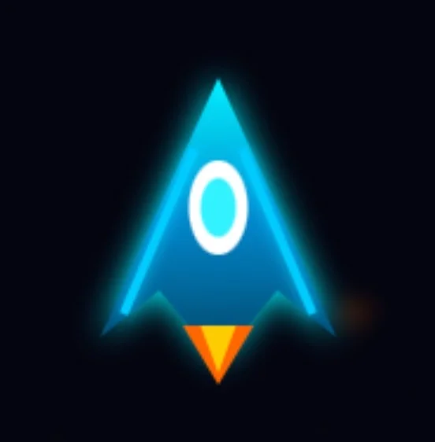

01
教育背景 EDUCATION
上海电力大学
信息安全专业 · 本科在读
2026 年 9 月 – 至今
上海市杨思高级中学
学生会体育部部长 / 艺术社骨干
2025 年 9 月 – 2026 年 6 月
02
校园经历 CAMPUS
上海市杨思高级中学 · 学生会体育部部长 / 艺术社骨干
共青团员（团员编号：202431030454）· 2025 年 9 月 – 2026 年 6 月
- 统筹秋季田径运动会、"杨高杯"系列赛事等大型体育活动，负责赛程规划、志愿者招募、人员调配与现场秩序统筹。
- 对接各班体育委员，统筹部门干事培训与分工，完善赛事台账与活动记录，提升跨班级协作效率。
- 收集同学体育活动诉求，妥善协调赛事突发情况，灵活调整活动方案，保障各项赛事顺利开展。
- 平衡学业与部门管理，带教低年级体育干事，推进校园体育文化建设，获评统筹协调能力突出。
- 作为艺术社骨干参与社团活动策划与演出筹备，提升创意表达与团队协作能力。
03
专业技能 SKILLS
AI 应用与智能体
WorkBuddy / ima / Obsidian / 阿里云百炼 搭建个人与团队 AI 知识库；掌握 RAG、AIGC、Prompt Engineering、AI Agent 构建与优化；用 AI 高效完成 PPT 设计与制作。
大模型与微调
通过科大讯飞「微调 / Prompt / 智能体工程师」认证；具备大模型应用、RAG 流程与智能体落地的实战经验。
编程开发
掌握 Python 基础开发，能独立完成网页小游戏的前后端开发与 Netlify 部署。
办公与表达
熟练用 PPT 做结构化表达与方案呈现；用 Markdown 与 Obsidian 构建个人双链知识管理体系。
内容创作与运营
具备短视频选题、拍摄、剪辑与账号运营能力；熟悉抖音平台内容逻辑与流量机制。
学习规划
已构建系统的 AI 工具使用方法论，计划持续拓展更多 AI 工具放大个人生产力。
04
项目经历 PROJECTS
个人 AI 知识库搭建与应用
独立负责人 · 2026WorkBuddy · ima · Obsidian · RAG · Prompt · AI Agent
- 从 0 到 1 设计并落地多端协同的个人 AI 知识库，完成技能资料、证书体系与学习笔记的结构化沉淀。
- 运用 RAG 检索增强优化知识召回路径，实现问答场景的精准响应与持续迭代。
- 建立「学习 → 沉淀 → 复用」知识管理闭环，为后续 AI 项目提供可复用资料底座。
网页小游戏《STELLAR ASSAULT · 飞机大战》
独立开发者 · 2026Web 前端 (HTML/CSS/JS) · Netlify 部署
- 独立完成玩法设计、交互逻辑、视觉呈现与线上部署，实现从创意到产品的完整闭环。
- 基于 Netlify 完成持续部署与托管，积累前端工程化与 DevOps 实战经验。
- 在线体验：

pqc-firstsmallgame.netlify.app
抖音个人 IP 运营与短视频创作
内容创作者 · 2026抖音 @Loaf · ID 92108298343
- 独立完成选题策划、脚本、拍摄剪辑、封面设计与发布运营，累计发布 9+ 条，获赞 5,149。
- 打造单条播放 1.9 万 +、另一条 1.8 万 + 的校园 / 生活 vlog 爆款。
- 以「个人生活 + 校园日常」为锚点，形成真实有共鸣的差异化人设。
- 个人主页：抖音 @Loaf
05
特长爱好 HOBBIES
内容创作
短视频策划、拍摄与剪辑；累计发布 9+ 条，单条最高播放 1.9 万 +。
游戏开发
独立设计与开发网页小游戏，从创意到上线完整闭环。
知识管理
用 Obsidian 构建个人双链知识库，沉淀体系化学习笔记。
体育与统筹
高中任学生会体育部部长，统筹秋季田径运动会等大型赛事。
艺术表达
艺术社骨干，参与演出筹备与创意策划。
AI 工具探索
持续研究并落地各类 AI 生产力工具，放大个人效率。
06
个人特色 ABOUT
一名对 AI、编程与内容创作充满热情的 18 岁学习者，具备快速学习与动手落地的能力。已通过 11 项 AI 领域权威认证，能够独立完成 AI 知识库搭建、网页游戏开发与短视频内容运营；在高中担任学生会体育部部长期间锻炼了统筹协调与团队管理能力。擅长用 PPT、Obsidian 与 AI 工具放大个人生产力，并规划持续拓展 AI 工具栈。期待在互联网 / AI / 内容运营相关岗位中持续成长，为团队创造实际业务影响。
获奖与证书 · 11 项
阿里云 Apsara Clouder
大模型智能体 / RAG / 内容生产 / Spring AI / AIGC · 5 项
达摩院 人工智能训练师
高级 / 初级 · 2 项
科大讯飞 AI 大学堂
微调 / Prompt / 智能体工程师 · 3 项
AI4S Cup
Python 基础能力认证（深势科技）· 1 项
证书一览 · 12 项（点击放大）
潘钱呈 · 个人简历 · 2026 | 感谢观看